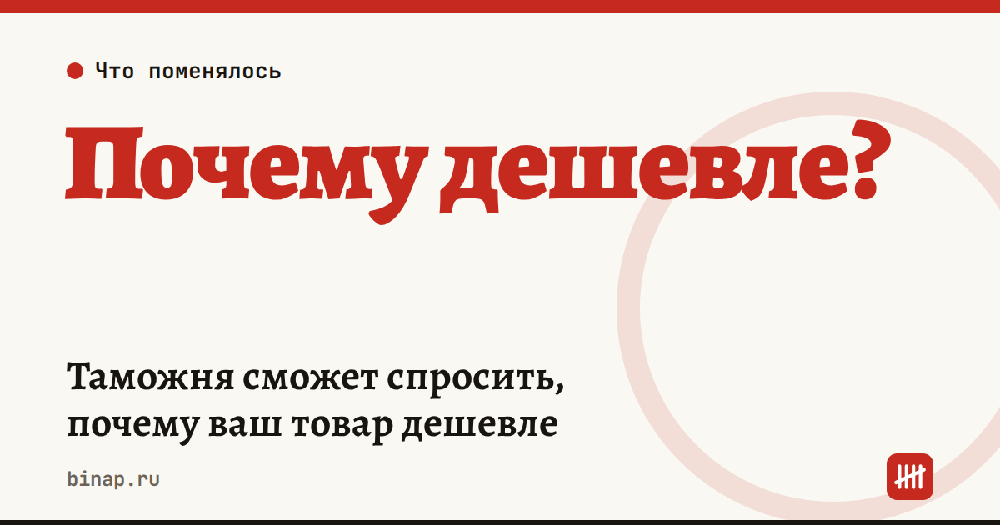

Таможня сможет спросить, почему ваш товар дешевле

Евразийская экономическая комиссия предложила новый признак занижения таможенной стоимости: цена, заметно ниже, чем у других импортёров того же товара. Пока это проект.
Что это значит: - Признаком недостоверной стоимости станет значительная разница стоимости идентичных и однородных товаров у разных импортёров на сопоставимых условиях. - По запросу таможни импортёр должен письменно объяснить разницу и подтвердить документами: перепиской с продавцом, аналитикой мировых цен. - Сейчас признаками занижения считаются противоречия между документами и цена ниже аналогов; таможня уже может запросить прайс-листы и пояснения о скидках. - Что такое «значительная» разница, сколько дней на ответ и когда решение вступит в силу, в проекте не названо. - Эксперты в «Коммерсанте» критикуют отсутствие чётких критериев и риск, что груз будет стоять на складе временного хранения, пока идёт спор. - Объективные причины расхождений, по мнению юриста Андрея Гусева: скидки, момент сделки, условия оплаты, объём поставки.
Что сделать сейчас: - По каждой партии храните контракт, инвойс, переписку о скидке и условиях оплаты в одной папке. - Фиксируйте, почему вы выбрали поставщика и цену: прайс конкурентов, скриншоты мировых цен с датой. - Закладывайте в расчёт простоя: если груз задержат на складе, добавятся расходы на хранение. Сумма зависит от склада; посчитайте по своему тарифу. - Следите за проектом: решение пока не принято.
Частые вопросы Это уже действует? Нет, это проект решения ЕЭК, срок вступления в силу в источниках не назван.
Какие документы подойдут? По проекту, например, переписка с продавцом и аналитика мировых цен из проверенных источников.